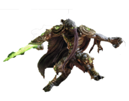
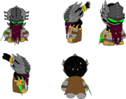
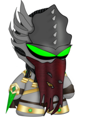
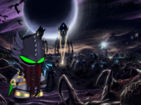
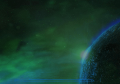
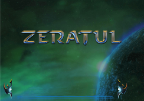

Dans le cadre de notre apprentissage de la suite adobe, mon école nous a demandé de créer un art toy (aussi appelé figurine pop) et ce, en utilisant Illustrator, Photoshop et Indesign. J'ai choisi d'utiliser Zeratul, personnage mythique de la licence Starcraft, une de mes licences favorites.
Sur illustrator, j'ai construit tout le corps de mon personnage. J'ai dû analyser ses caractéristiques, rassembler celles que je jugeais les plus importantes pour finalement les caricaturé. J'ai ainsi créé un turn around de mon personnage.
 Zeratul personnage de Starcraft Turn around
Vint ensuite l'implantation des matériaux sur photoshop, la création des ombres et l'implantation dans un décors. Ce fut la phase la plus complexe pour moi, car étant daltonien, je ne vois que peu les nuances de couleurs. Mais je pense être arrivé à un résultat acceptable.
 Textures apportées Zeratul avec décors
Enfin vins la mise en page, j'ai dû en effet créer un pdf présentant mon personnage, son histoire, ses caractéristiques, etc… Pour ce faire j'ai choisi l'un des écrans de chargement du jeu que j'ai modifié pour le bien de ma présentation.
 vous pouvez telcharger le pdf sur Zeratul.pdf